Tutorial 4: CRISPR-Cas9 screens
Emanuel Michele Soda
Istituto Europeo Oncologia (IEO), Milano, Italyemanuelsoda@gmail.com
Elena Ceccacci
Istituto Europeo Oncologia (IEO), Milano, Italyelena.ceccacci@ieo.it
2026-10-18
Source:vignettes/Tutorial_4_CRISPR_screens.Rmd
Tutorial_4_CRISPR_screens.RmdAbout this tutorial
ScreenR was written for shRNA screens, but CRISPR-Cas9 knockout screens produce the same kind of data: a table of read counts, one row for each guide RNA (sgRNA) and one column for each sample. In ScreenR an sgRNA is simply a “barcode”, and everything in the other tutorials applies. This tutorial goes through a CRISPR dropout screen step by step and shows what is specific to CRISPR:
- installing ScreenR and, optionally, CRISPRcleanR;
- describing a time-course dropout screen (T0 and later time points);
- choosing the thresholds on the number of sgRNAs per gene;
- checking the quality of the screen with essential and non-essential reference genes;
- measuring the efficiency of the sgRNAs;
- correcting the copy-number bias of CRISPR-Cas9 with CRISPRcleanR;
- finding the hits, using the non-essential genes as reference, and checking the sgRNAs of each hit;
- positive-selection screens.
| shRNA screen | CRISPR-Cas9 knockout screen | |
|---|---|---|
| Reagent (a “barcode” in ScreenR) | shRNA | sgRNA |
| Reagents per gene | often 5 to 25 | usually 3 to 6 (4 in TKOv3 and Brunello) |
| Typical design | treated vs control at each time point | late time point vs T0 or plasmid |
| Gene-independent effects | seed (off-target) effects | DNA cutting: copy-number and proximity bias |
| Good null reference | non-essential genes | non-essential genes (non-targeting sgRNAs do not cut, so they are not a good null) |
Installation
ScreenR is on Bioconductor:
if (!requireNamespace("BiocManager", quietly = TRUE)) {
install.packages("BiocManager")
}
BiocManager::install("ScreenR")The copy-number correction uses the CRISPRcleanR
package (Iorio et al. 2018). It is optional: everything else in this
tutorial works without it. CRISPRcleanR is not on CRAN or Bioconductor,
so it is installed from GitHub; BiocManager::install() also
installs its Bioconductor dependencies:
BiocManager::install("francescojm/CRISPRcleanR")crisprcleanr_available() tells whether it is
installed:
The plots of ScreenR have no theme of their own; one is chosen for
the whole tutorial with theme_set():
theme_set(theme_light(base_size = 12))CRISPRcleanR is not installed where this tutorial was built: the code of the copy-number correction is shown but not run, and its results are read from a precomputed table.
The data
hap1_count_table comes from a genome-wide CRISPR-Cas9
knockout screen of HAP1 cells with the TKOv3 library (Hart et al. 2017):
the T0 sample and three replicates after 3 and 18 days of growth. Cells
that lose a gene needed for growth (an essential gene) are lost over
time, so the sgRNAs of essential genes are depleted at day 18. To keep
the package small the dataset is a subset of the 70,877 sgRNAs of the
library (see ?hap1_count_table).
data(hap1_count_table)
data(hap1_annotation_table)
head(hap1_count_table)
#> Barcode T0 T3_A T3_B T3_C T18_A T18_B T18_C
#> 1 EGFP_TGGTTGTCGGGCAGCAGCAC 537 222 150 216 243 115 304
#> 2 EGFP_GGTTGTCGGGCAGCAGCACG 210 197 92 125 195 177 115
#> 3 EGFP_TTCAAGTCCGCCATGCCCGA 517 423 255 282 329 309 433
#> 4 EGFP_CGGCGGTCACGAACTCCAGC 278 167 54 120 165 184 65
#> 5 EGFP_GGTGCCCATCCTGGTCGAGC 83 99 41 19 107 103 44
#> 6 EGFP_GAAGTTCGAGGGCGACACCC 268 145 153 204 133 295 228
head(hap1_annotation_table)
#> Barcode Gene Chromosome Strand Start End Class
#> 1 EGFP_TGGTTGTCGGGCAGCAGCAC EGFP <NA> <NA> NA NA control
#> 2 EGFP_GGTTGTCGGGCAGCAGCACG EGFP <NA> <NA> NA NA control
#> 3 EGFP_TTCAAGTCCGCCATGCCCGA EGFP <NA> <NA> NA NA control
#> 4 EGFP_CGGCGGTCACGAACTCCAGC EGFP <NA> <NA> NA NA control
#> 5 EGFP_GGTGCCCATCCTGGTCGAGC EGFP <NA> <NA> NA NA control
#> 6 EGFP_GAAGTTCGAGGGCGACACCC EGFP <NA> <NA> NA NA controlThe annotation has the gene of each sgRNA and its position in the genome (used by CRISPRcleanR), and a Class column that tells the core essential and non-essential reference genes, the controls and the other genes.
Creating the ScreenR object
The sample names (T0, T3_A, …) do not
follow the Day_Treatment_Replicate convention of ScreenR,
so the samples are described with a sample_table. T0, T3
and T18 are the time points (the Day column). A dropout
screen has no treatment: the cells only grow, and the comparison is
between time points, so every sample has the same
Treatment, here "Untreated". The
groups (used by the statistical models) are the time
points. The palettes give each time point (and each sample)
the same color in every plot.
samples <- data.frame(
Sample = colnames(hap1_count_table)[-1],
Day = c("T0", "T3", "T3", "T3", "T18", "T18", "T18"),
Treatment = "Untreated"
)
samples
#> Sample Day Treatment
#> 1 T0 T0 Untreated
#> 2 T3_A T3 Untreated
#> 3 T3_B T3 Untreated
#> 4 T3_C T3 Untreated
#> 5 T18_A T18 Untreated
#> 6 T18_B T18 Untreated
#> 7 T18_C T18 Untreated
time_colors <- c(T0 = "#999999", T3 = "#7570B3", T18 = "#D95F02")
object <- create_screenr_object(
table = hap1_count_table,
annotation = hap1_annotation_table,
groups = factor(samples$Day, levels = c("T0", "T3", "T18")),
sample_table = samples,
palettes = list(
Day = time_colors, Group = time_colors,
Sample = c(T0 = "#999999", T3_A = "#9E9AC8", T3_B = "#7570B3",
T3_C = "#54278F", T18_A = "#FDAE6B", T18_B = "#D95F02",
T18_C = "#A63603")
)
)
object <- remove_all_zero_row(object)
object
#> class: screenr_object
#> dim: 13598 7
#> metadata(2): screenr_layout palettes
#> assays(1): counts
#> rownames(13598): EGFP_TGGTTGTCGGGCAGCAGCAC EGFP_GGTTGTCGGGCAGCAGCACG
#> ... luciferase_GGCTATGAAGAGATACGCCC luciferase_GGCATGCGAGAATCTGACGC
#> rowData names(7): Barcode Gene ... End Class
#> colnames(7): T0 T3_A ... T18_B T18_C
#> colData names(4): Sample Day Treatment Group
#> normalization: none (run normalize_data())How many sgRNAs per gene?
Several functions test a gene only if it has enough barcodes:
number_barcode in find_camera_hit(),
find_roast_hit(), find_time_hit() and
plot_barcode_hit() (genes need more than
number_barcode barcodes, default 3) and
min_barcodes in find_gene_zscore_hit() (genes
need at least min_barcodes, default 3). These
defaults were chosen for shRNA libraries.
barcodes_per_gene() shows what the library has:
per_gene <- barcodes_per_gene(object)
table(per_gene$NBarcodes)
#>
#> 1 2 3 4 22 24 94
#> 52 51 88 3260 1 1 1Most genes have 4 sgRNAs. With number_barcode = 3, genes
that lost one sgRNA (and genes designed with 3) are not tested; when
this excludes many genes the functions give a warning that suggests a
better value, so it is safe to start from the defaults. Here
number_barcode = 2 (at least 3 sgRNAs) keeps almost every
gene.
Quality control
The general quality control of Tutorial 2 applies to CRISPR screens, with any sample names and time points.
Sequencing depth
plot_mapped_reads() shows the number of reads of each
sample. Samples with far fewer reads than the others are less
reliable:
plot_mapped_reads(object)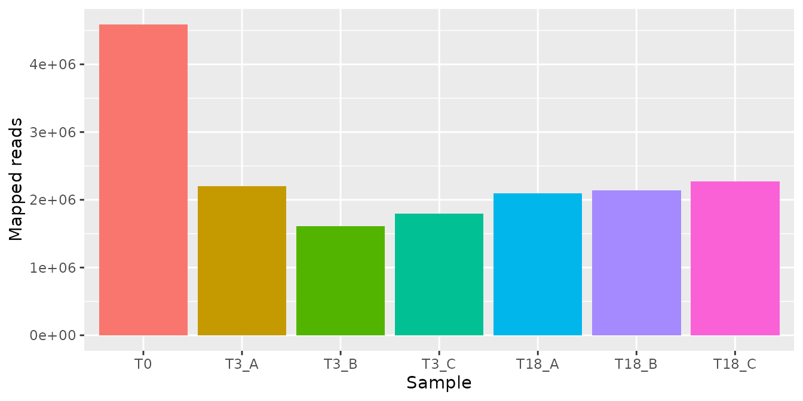
The T0 sample was sequenced about twice as deeply as the others, which is common: it is the reference of every comparison. Every sample has at least 1.6 million reads, more than 100 for each sgRNA of this subset.
plot_mapped_reads_distribution() shows the distribution
of the reads of the sgRNAs in each sample:
plot_mapped_reads_distribution(object)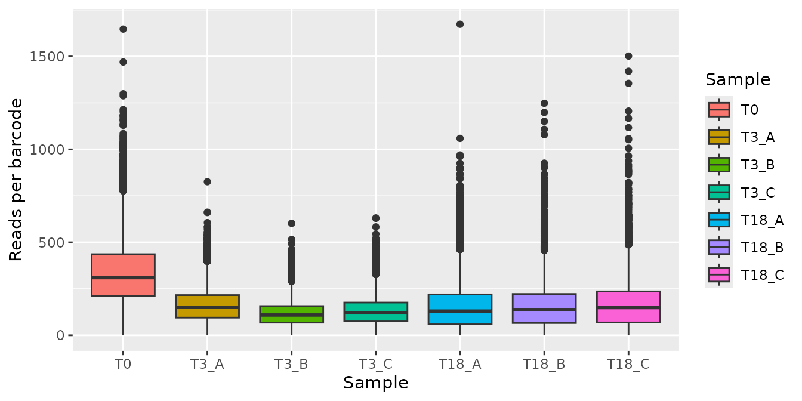
plot_mapped_reads_distribution(object, type = "density", alpha = 0.3)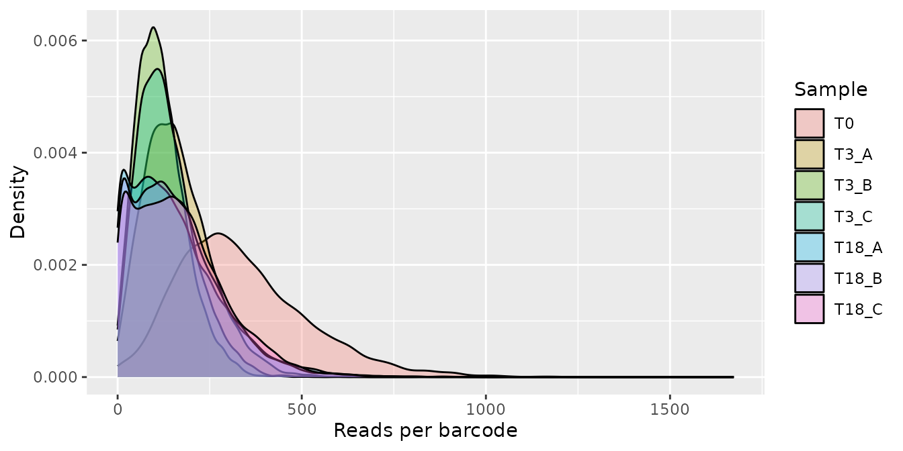
The counts are raw, so the T0 sample, sequenced more deeply, is shifted to the right. At day 18 the distribution is wider than at day 3, with more sgRNAs close to 0: the sgRNAs of the essential genes are dropping out.
Lost sgRNAs
barcode_lost() counts the sgRNAs with no reads in each
sample and plot_barcode_lost() shows them. At T0 almost
every sgRNA should be present: an sgRNA missing there was not
represented in the library and cannot be measured.
barcode_lost(object)
#> # A tibble: 7 × 2
#> Sample LostBarcode
#> <fct> <int>
#> 1 T0 26
#> 2 T3_A 47
#> 3 T3_B 48
#> 4 T3_C 63
#> 5 T18_A 456
#> 6 T18_B 301
#> 7 T18_C 296
plot_barcode_lost(object) +
scale_x_discrete(guide = guide_axis(angle = 45))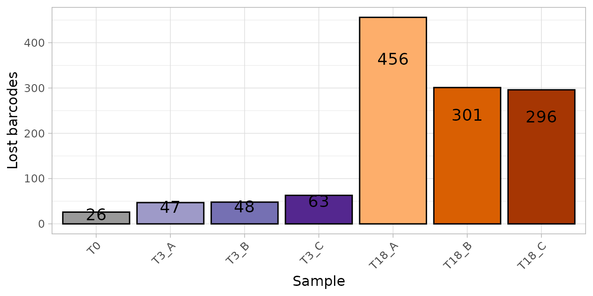
In a shRNA screen many lost barcodes are a warning; in a CRISPR
dropout screen the sgRNAs lost at the late time point are expected,
because the cells that carry the sgRNAs of essential genes are gone.
count_mapped_reads() gives the reads of each sgRNA in each
sample, so the lost sgRNAs can be assigned to the reference genes
(defined in the quality
section below):
data(hart_reference_genes)
essential <- hart_reference_genes$Gene[
hart_reference_genes$Class == "core essential"]
nonessential <- hart_reference_genes$Gene[
hart_reference_genes$Class == "non-essential"]
count_mapped_reads(object) %>%
filter(Mapped == 0) %>%
mutate(
Gene = hap1_annotation_table$Gene[
match(Barcode, hap1_annotation_table$Barcode)],
Class = case_when(
Gene %in% essential ~ "Core essential",
Gene %in% nonessential ~ "Non-essential",
TRUE ~ "Other"
)
) %>%
dplyr::count(Sample, Class) %>%
tidyr::pivot_wider(names_from = Class, values_from = n, values_fill = 0)
#> # A tibble: 7 × 4
#> Sample `Core essential` `Non-essential` Other
#> <fct> <int> <int> <int>
#> 1 T0 7 5 14
#> 2 T3_A 16 11 20
#> 3 T3_B 16 12 20
#> 4 T3_C 26 12 25
#> 5 T18_A 362 17 77
#> 6 T18_B 238 12 51
#> 7 T18_C 240 11 45At day 18 most lost sgRNAs target core essential genes, and very few
target non-essential genes: the losses are the effect of the screen, not
a technical problem. plot_barcode_lost_for_gene() (see Tutorial 2) lists the genes
that lost sgRNAs in chosen samples; at day 18 they are hundreds, so it
is more useful at T0, to find the genes that were poorly represented
from the start:
plot_barcode_lost_for_gene(object, samples = "T0")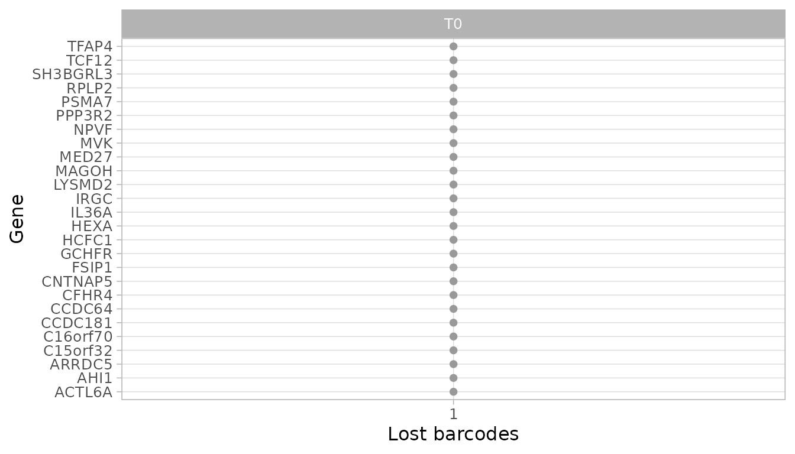
Each of these genes lost a single sgRNA at T0 and is still measured with the others.
Library representation and replicates
The library should be evenly represented at T0 (low Gini index) and the replicates should agree:
plot_gini(object)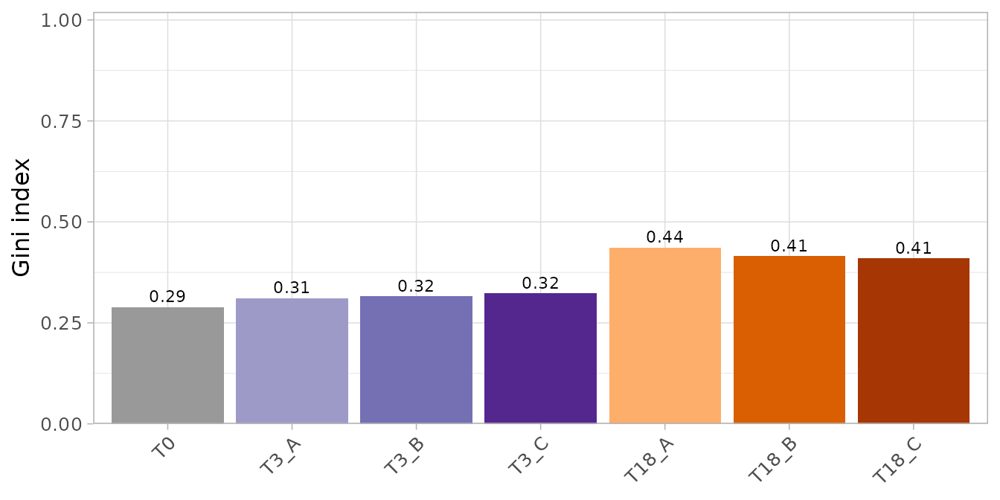
The plots so far use the raw counts. The correlation between replicates and the sample plots below compare normalized counts, so the counts are normalized first (counts per million; the choice of the normalization is discussed below):
object <- normalize_data(object)
plot_replicate_correlation(object)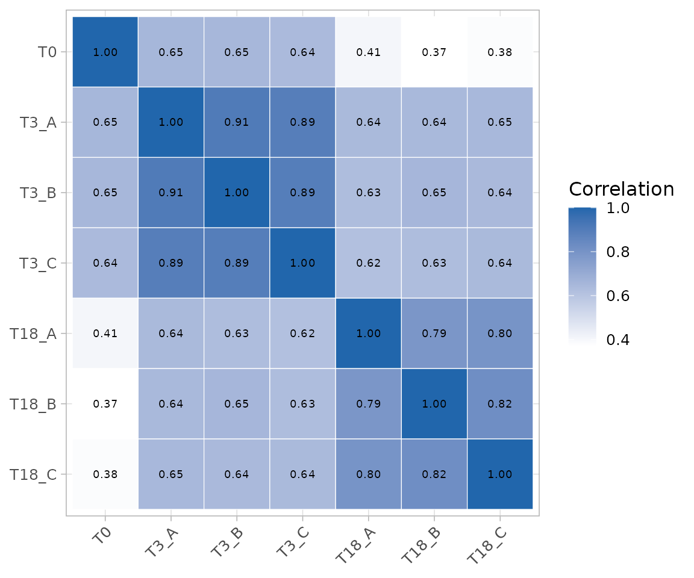
Clustering of the samples
plot_mds() and plot_pca() place the samples
so that similar samples are close, and
plot_explained_variance() shows how much of the differences
between the samples each principal component explains. Both the MDS and
the PCA use the log2 normalized counts, with the normalization chosen in
normalize_data() (here counts per million), so that the
sequencing depth of the samples does not drive the result:
plot_mds(object)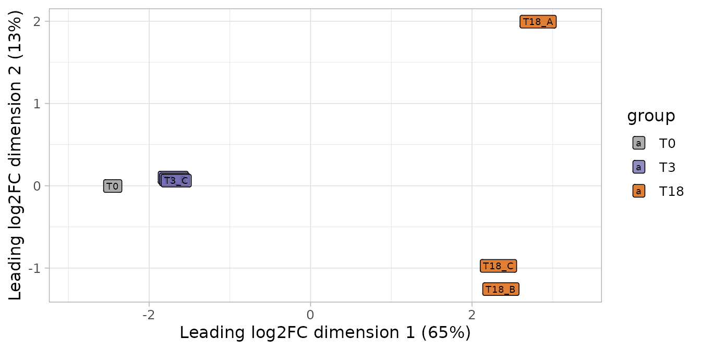
plot_pca(object)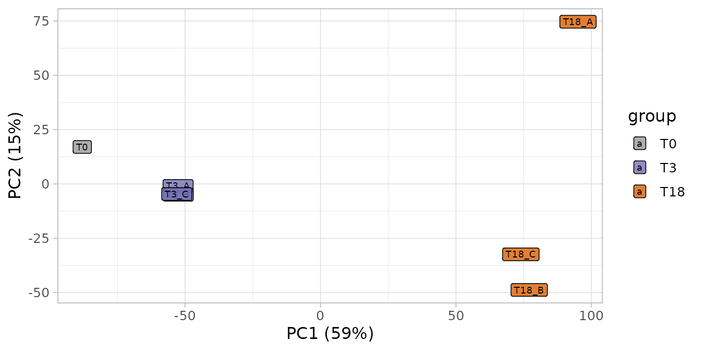
plot_explained_variance(object)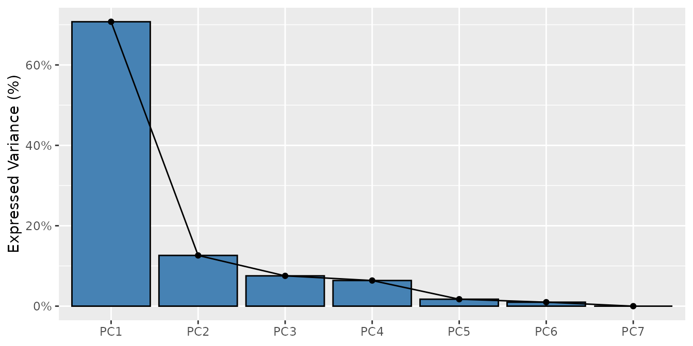
plot_explained_variance(object, cumulative = TRUE)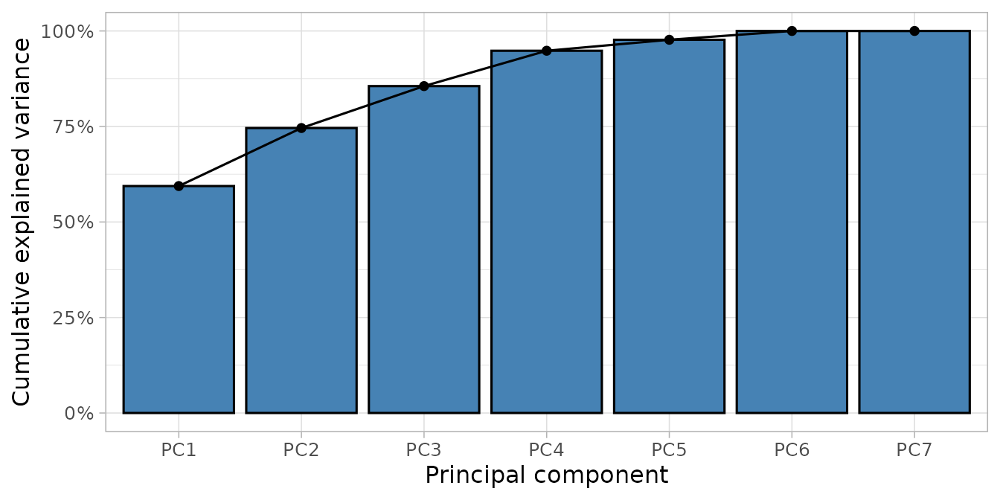
The first dimension of both plots orders the samples by time point (T0, then day 3, then day 18): the main difference between the samples is the growth of the cells, as expected in a dropout screen. The day 3 replicates are very close; the day 18 replicates differ more, because the depletion has had more time to diverge. The first principal component explains 59% of the variability.
Quality with reference genes
The most informative check of a dropout screen uses genes whose
behaviour is known: the core essential genes should be depleted, the
non-essential genes should not. hart_reference_genes has
the lists of Hart et al. for human cells.
compute_screen_quality() measures how well the two groups
are separated (NNMD and Cohen’s d: more negative is better; ROC AUC: 0.5
is no separation, 1 is perfect) and
plot_reference_separation() shows it. The two lists were
read above, to classify the lost sgRNAs:
c(`Core essential` = length(essential), `Non-essential` = length(nonessential))
#> Core essential Non-essential
#> 684 926compute_metrics() computes the log2 fold change of each
sgRNA between two groups of samples. In a treated screen they are a
treatment and a control of the same day; in a dropout screen they are
two time points: condition_column = "Day" makes
control and treatment values of the Day
column.
day3 <- compute_metrics(object,
control = "T0", treatment = "T3", condition_column = "Day"
)
day18 <- compute_metrics(object,
control = "T0", treatment = "T18", condition_column = "Day"
)
quality <- bind_rows(
`Day 3` = compute_screen_quality(day3, essential, nonessential),
`Day 18` = compute_screen_quality(day18, essential, nonessential),
.id = "Time point"
)
knitr::kable(quality, digits = 3)| Time point | NEssential | NNonessential | MeanEssential | MeanNonessential | NNMD | CohenD | AUC |
|---|---|---|---|---|---|---|---|
| Day 3 | 646 | 797 | -0.722 | 0.178 | -2.510 | -1.604 | 0.881 |
| Day 18 | 646 | 797 | -2.346 | 0.358 | -7.199 | -3.868 | 0.998 |
After 3 days the essential genes are only starting to drop out; after 18 days the separation is almost perfect.
plot_reference_separation(day18, essential, nonessential) +
ggtitle("Day 18 vs T0")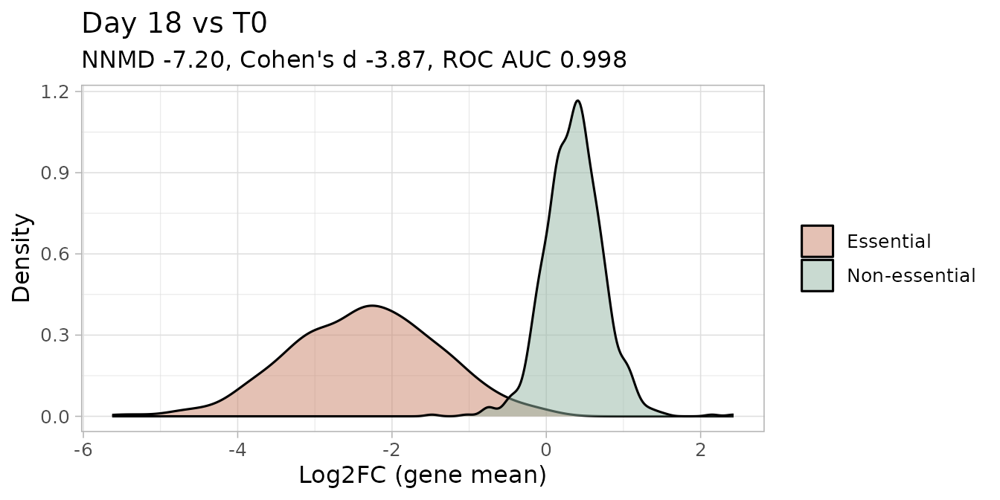
plot_zscore_distribution() compares the sgRNA fold
changes of the two time points (the Day column of the
tables, T3 and T18). It receives the tables,
not the object, so the palette of the time points is given
explicitly:
plot_zscore_distribution(list(day3, day18),
alpha = 0.5, palette = get_palettes(object)$Day
) +
labs(fill = "Time point")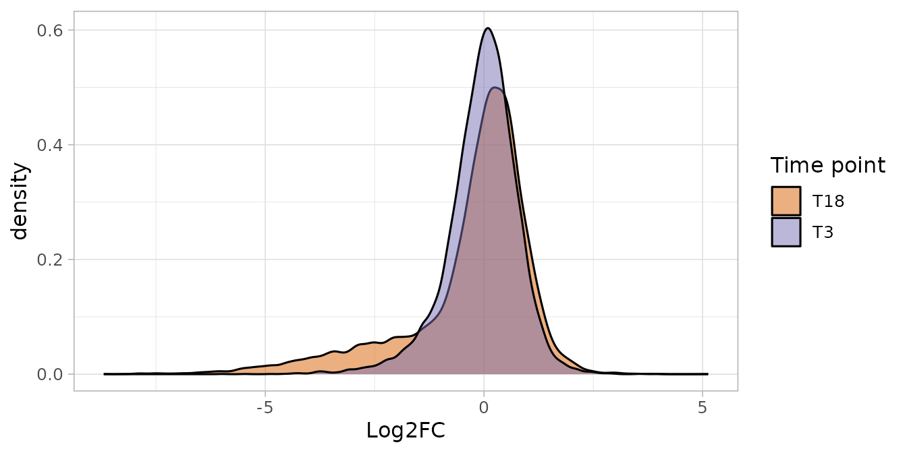
At day 18 the distribution has a long left tail (the depleted sgRNAs) that is only beginning at day 3.
plot_boxplot() shows the normalized counts of the sgRNAs
of single genes in each sample, for example two core essential genes and
the EGFP control (sgRNAs that target a gene not present in the
cells):
plot_boxplot(object,
genes = c("POLR2L", "RPL14", "EGFP"),
group_var = "Untreated", fill_var = "Day", ncol = 3
) +
scale_x_discrete(guide = guide_axis(angle = 45))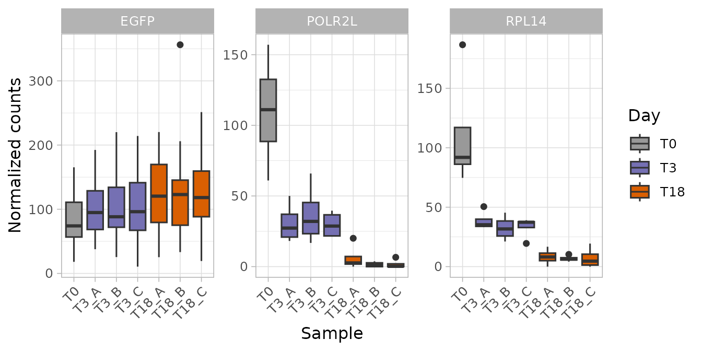
The sgRNAs of the essential genes are depleted at day 3 and almost gone at day 18; those of EGFP are stable (slightly higher, because of the CPM normalization described below).
plot_trend() follows the same genes over time. The time
points are in the Day column (time_column, the default),
and time places them at their real days, so that day 3 is
close to T0 and far from day 18:
plot_trend(object,
genes = c("POLR2L", "RPL14", "EGFP"), group_var = "Untreated",
time = c(T0 = 0, T3 = 3, T18 = 18),
trend = "mean", ncol = 3, scales = "free_y"
) +
labs(x = "Days", y = "Mean normalized counts per sgRNA")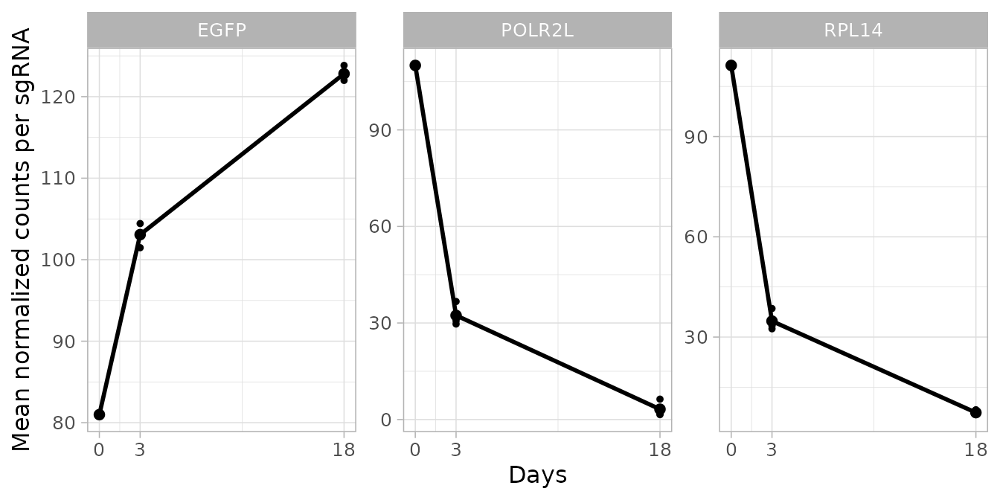
compute_slope() gives the slope of the line of each
gene, per day when the real times are given with time: a
summary of the depletion rate that can be compared between genes:
compute_slope(object,
genes = c("POLR2L", "RPL14", "EGFP"), group_var = "Untreated",
time = c(T0 = 0, T3 = 3, T18 = 18)
)
#> # A tibble: 3 × 2
#> # Rowwise: Gene
#> Gene Slope
#> <chr> <dbl>
#> 1 EGFP 1.69
#> 2 POLR2L -3.44
#> 3 RPL14 -3.31plot_treatment_separation() shows how much a gene
changes between two conditions, as the log2 ratio of their mean
normalized counts labelled with the percentage difference. Here the
conditions are the time points (condition_column = "Day",
the same column as time_column), so every time point is
compared with T0 and placed at its real day:
plot_treatment_separation(object, genes = c("POLR2L", "RPL14", "EGFP"),
treatment = c("T3", "T18"), control = "T0", condition_column = "Day",
time = c(T0 = 0, T3 = 3, T18 = 18), nrow = 1
) +
labs(x = "Days")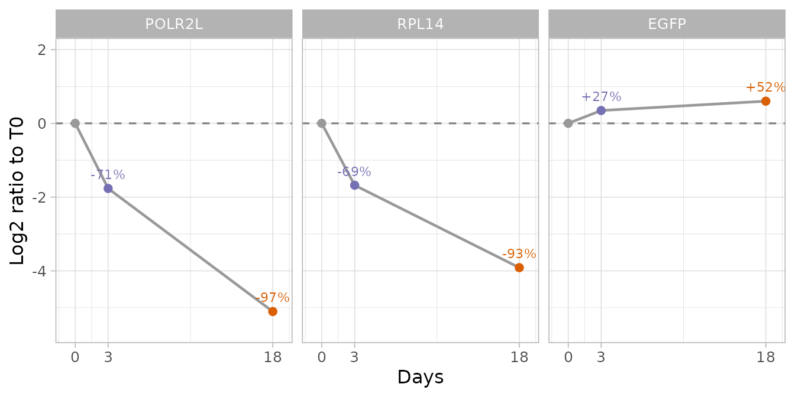
plot_barcode_heatmap() shows each sgRNA in each sample
(log2 normalized counts minus the mean of the sgRNA): every sgRNA of the
two essential genes drops out, which is what a good knockout looks like.
A gene supported by a single sgRNA would show one blue row among white
ones.
plot_barcode_heatmap(object, genes = c("POLR2L", "RPL14")) +
scale_x_discrete(guide = guide_axis(angle = 45))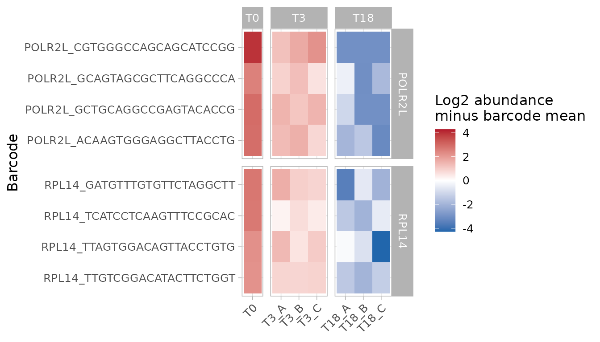
The non-essential genes have a positive mean log2 fold change (0.36
at day 18) although they have no effect. This is a side effect of the
CPM normalization: when many sgRNAs drop out, the reads of the sample go
to the others, which look enriched. The ranking of the genes does not
change, but the baseline is not 0. Normalizing to the sgRNAs of the
non-essential genes (method = "control") puts it back at
0:
nonessential_sgrnas <- intersect(rownames(object),
hap1_annotation_table$Barcode[hap1_annotation_table$Gene %in% nonessential])
day18_control <- normalize_data(object,
method = "control", control_barcodes = nonessential_sgrnas
) %>%
compute_metrics(control = "T0", treatment = "T18",
condition_column = "Day")
knitr::kable(compute_screen_quality(day18_control, essential, nonessential),
digits = 3)| NEssential | NNonessential | MeanEssential | MeanNonessential | NNMD | CohenD | AUC |
|---|---|---|---|---|---|---|
| 646 | 797 | -2.782 | 0.027 | -7.184 | -3.688 | 0.997 |
The rest of the tutorial uses the CPM normalization. The baseline matters for the self-contained tests such as FRY, which ask whether a gene changes at all: with the non-essential sgRNAs at 0, the small real effects of many genes become significant. In this dataset, normalizing to half of the non-essential genes made FRY call about 6% of the other half at 5% FDR, against almost none with CPM. The tests that compare each gene with the others (CAMERA and the Z-score tests) depend much less on the baseline.
sgRNA efficiency
Not every sgRNA works equally well: some knock out their gene, others have little effect. A dropout screen gives an indirect estimate of this through the core essential genes: all their sgRNAs should be depleted, so an sgRNA of an essential gene that is barely depleted is probably inefficient. It is an estimate, not a measurement: the depletion also depends on how often the repair keeps the gene in frame, on how essential the gene is in these cells and on the noise of the counts. The sequence of each sgRNA (20 nucleotides, before the NGG PAM) is the second part of its identifier, so it can be related to the depletion.
Here an sgRNA of an essential gene is called effective when its log2 fold change at day 18 is below the 5th percentile of the sgRNAs of the non-essential genes. The cut off is a choice: by construction 5% of the sgRNAs without effect would pass it too.
guides <- day18 %>%
mutate(
Sequence = sub(".*_", "", Barcode),
GC = nchar(gsub("[AT]", "", Sequence)) / nchar(Sequence),
PAMProximal = substr(Sequence, 20, 20)
)
threshold <- quantile(
guides$Log2FC[guides$Gene %in% nonessential], 0.05)
essential_guides <- guides %>%
filter(Gene %in% essential) %>%
mutate(Effective = Log2FC < threshold)
mean(essential_guides$Effective)
#> [1] 0.835844684% of the sgRNAs of the core essential genes are effective. A gene needs only some effective sgRNAs to be found, and most essential genes have three or four:
essential_guides %>%
group_by(Gene) %>%
summarise(EffectiveGuides = sum(Effective)) %>%
dplyr::count(EffectiveGuides)
#> # A tibble: 5 × 2
#> EffectiveGuides n
#> <int> <int>
#> 1 0 6
#> 2 1 24
#> 3 2 87
#> 4 3 206
#> 5 4 323The genes with no or one effective sgRNA are the ones the gene-level
tests are most likely to miss: plot_barcode_heatmap() and
plot_barcode_hit() show them as single blue rows among
white ones.
Is the difference between the sgRNAs of a gene a property of the sgRNAs, or noise? If it is a property of the sgRNAs it is the same in independent cultures. The three replicates (A, B and C) were grown separately from day 3 to day 18, so the change of each sgRNA in this interval is measured three times independently. The part specific to the sgRNA is its log2 fold change minus the median of its gene:
normalized <- get_normalized_count_table(object)
#> ScreenR normalized count table: 13598 rows, 8 columns
guide_effect <- function(late, early) {
tibble(
Gene = hap1_annotation_table$Gene[
match(normalized$Barcode, hap1_annotation_table$Barcode)],
Log2FC = log2((normalized[[late]] + 0.5) / (normalized[[early]] + 0.5))
) %>%
group_by(Gene) %>%
mutate(GuideEffect = Log2FC - median(Log2FC)) %>%
pull(GuideEffect)
}
reproducibility <- data.frame(
A = guide_effect("T18_A", "T3_A"),
B = guide_effect("T18_B", "T3_B"),
C = guide_effect("T18_C", "T3_C")
)[normalized$Barcode %in% essential_guides$Barcode, ]
round(cor(reproducibility, method = "spearman"), 2)
#> A B C
#> A 1.00 0.37 0.36
#> B 0.37 1.00 0.41
#> C 0.36 0.41 1.00The correlations are positive in every pair of cultures: part of the difference between the sgRNAs of an essential gene is reproducible, so it belongs to the sgRNAs; the rest is noise. A single screen ranks the sgRNAs only roughly.
The efficiency depends on the sequence. The GC content and the nucleotide next to the PAM (position 20) are two known factors (Doench et al. 2014): sgRNAs with a GC content of about 50-60% and a G at position 20 deplete more.
essential_guides %>%
mutate(GC = cut(GC, c(0, 0.4, 0.5, 0.6, 0.7, 1),
labels = c("<40%", "40-50%", "50-60%", "60-70%", ">70%"))) %>%
ggplot(aes(GC, Log2FC)) +
geom_boxplot(fill = time_colors[["T18"]], alpha = 0.5,
outlier.size = 0.5) +
labs(x = "GC content", y = "Log2FC at day 18",
title = "sgRNAs of the core essential genes")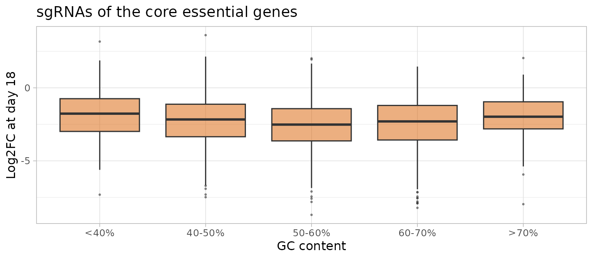
essential_guides %>%
group_by(PAMProximal) %>%
summarise(Guides = n(), MedianLog2FC = median(Log2FC),
Effective = mean(Effective))
#> # A tibble: 4 × 4
#> PAMProximal Guides MedianLog2FC Effective
#> <chr> <int> <dbl> <dbl>
#> 1 A 780 -2.09 0.828
#> 2 C 332 -1.80 0.777
#> 3 G 1257 -2.50 0.866
#> 4 T 153 -1.97 0.758The GC content and the nucleotide at position 20 explain only a small part of the differences: the depletion is a noisy and indirect estimate, and these plots show trends, not the efficiency of a single sgRNA.
None of the sgRNAs contains TTTT (0 sgRNAs), which ends
the transcription by the U6 promoter: the library was designed to avoid
it. These effects are small compared with the differences between genes,
and the gene-level tests do not need them; they are useful to choose the
sgRNAs of a validation experiment, or to judge a gene whose sgRNAs
disagree (see find_discordant_barcodes() below). For a
prediction of the efficiency of an sgRNA use dedicated tools, such as
Rule Set 2 (Doench et al. 2016); to measure it, sequence the target site
of the cells (the fraction of edited alleles) or check the loss of the
protein.
Copy-number bias and CRISPRcleanR
Cas9 cuts the DNA, and cells with many cuts grow less. sgRNAs that
target amplified regions of the genome therefore deplete the cells
whatever the gene they target, and the genes there look essential.
CRISPRcleanR (Iorio et al. 2018) finds the regions where many
neighbouring sgRNAs that target different genes are depleted together
and corrects their fold changes, without needing copy-number data.
correct_crispr_bias() runs CRISPRcleanR on a ScreenR object
and returns a new ScreenR object with the corrected counts. ScreenR does
not reimplement the method: it only calls CRISPRcleanR.
The correction needs
- the complete genome-wide library: CRISPRcleanR
assumes that most of the genes in a region have no effect. On a subset
of genes enriched in hits it removes real signal, so it must not be used
on
hap1_count_table; - a library annotation with the position of each
sgRNA, in the format of CRISPRcleanR (row names: the sgRNA identifiers;
columns GENES, CHRM, STARTpos and ENDpos). CRISPRcleanR includes the
annotation of several libraries (
KY_Library_v1.0,Brunello_Library,AVANA_Library,GeCKO_Library_v2, …); for another library, build the data frame from its annotation file.
This example uses the complete HT-29 screen distributed with CRISPRcleanR (KY library, about 90,000 sgRNAs; HT-29 cells carry an amplification of the MYC region on chromosome 8q24). It takes about a minute.
ccr <- "CRISPRcleanR"
# Library annotation and counts distributed with CRISPRcleanR
library_annotation <- get(utils::data("KY_Library_v1.0", package = ccr))
counts <- read.delim(system.file("extdata", "HT-29_counts.tsv",
package = ccr
))
colnames(counts) <- c("Barcode", "Gene", "Plasmid", "HT29_R1", "HT29_R2",
"HT29_R3")
ht29 <- create_screenr_object(
table = counts[, -2], annotation = counts[, c("Barcode", "Gene")],
groups = factor(c("Plasmid", "Late", "Late", "Late")),
sample_table = data.frame(
Sample = c("Plasmid", "HT29_R1", "HT29_R2", "HT29_R3"),
Day = c("Plasmid", "Late", "Late", "Late"), Treatment = "Untreated"
)
)
ht29_corrected <- correct_crispr_bias(ht29,
library_annotation = library_annotation,
control = "Plasmid", treatment = c("HT29_R1", "HT29_R2", "HT29_R3")
)
ht29_correctedThe corrected object is analysed like any other: normalize it,
compute the data table and find the hits. CRISPRcleanR’s own results
(the corrected sgRNA fold changes and the segments of the genome) are in
S4Vectors::metadata(ht29_corrected)$crisprcleanr.
The effect of the correction on this screen (computed with the code
above; the script is in the benchmark/crispr folder of the
GitHub repository):
correction <- read.csv(system.file("extdata", "crisprcleanr_ht29.csv",
package = "ScreenR"
))
knitr::kable(correction, digits = 3,
col.names = c("Counts", "NNMD", "Cohen's d", "ROC AUC",
"Mean log2FC in 8q24 (genes not known to be essential)")
)| Counts | NNMD | Cohen’s d | ROC AUC | Mean log2FC in 8q24 (genes not known to be essential) |
|---|---|---|---|---|
| Raw | -8.288 | -2.947 | 0.994 | -0.260 |
| Corrected (CRISPRcleanR) | -8.765 | -2.617 | 0.979 | 0.019 |
Before the correction, the genes in the amplified 8q24 region that are not known to be essential are depleted (mean log2 fold change about -0.26); after the correction they are not (about 0). The separation of the reference genes is similar, with a slightly lower ROC AUC: the correction removes a gene-independent bias, it does not make the screen stronger.
Finding the hits
The hit-finding functions are used as in Tutorial 3. The comparison is day 18 against T0:
design <- create_design_matrix(object)
contrast <- create_contrast(design, treatment = "T18", control = "T0")Gene-level Z-score test with the non-essential genes as reference
find_gene_zscore_hit() compares the mean score of the
sgRNAs of each gene with the scores of random sets of sgRNAs. By default
the random sgRNAs come from all the genes, which include the hits, so
the test is conservative when many genes have an effect, as in
proliferation screens. When genes known to have no effect are available,
they are a better reference (control_genes). For CRISPR
screens the non-essential genes are the natural choice: their sgRNAs cut
the DNA like any other, while non-targeting sgRNAs do not.
To be able to check the result, here half of the non-essential genes are used as reference and the other half is kept to count the false calls; in a real analysis use all of them.
set.seed(2017)
reference <- sample(nonessential, length(nonessential) %/% 2)
held_out <- setdiff(nonessential, reference)
statistics <- compute_barcode_statistics(object, design, contrast)
zscore <- find_gene_zscore_hit(statistics,
control_genes = reference, fdr = 1, seed = 1
)
head(zscore)
#> # A tibble: 6 × 6
#> Gene NBarcodes Score Log2FC PValue FDR
#> <chr> <int> <dbl> <dbl> <dbl> <dbl>
#> 1 AARS 4 -2.73 -2.41 0.00001000 0.0000476
#> 2 ABCE1 4 -3.17 -3.15 0.00001000 0.0000476
#> 3 ABCF1 4 -2.37 -1.74 0.00001000 0.0000476
#> 4 ACTR10 4 -3.47 -3.18 0.00001000 0.0000476
#> 5 ACTR2 4 -2.94 -2.21 0.00001000 0.0000476
#> 6 ADSL 4 -3.52 -3.07 0.00001000 0.0000476
called <- zscore$Gene[zscore$FDR <= 0.05]
data.frame(
`Genes called` = length(called),
`Core essential` = sum(called %in% essential),
`Held-out non-essential` = sum(called %in% held_out),
`Other genes` = sum(!called %in% c(essential, nonessential)),
check.names = FALSE
)
#> Genes called Core essential Held-out non-essential Other genes
#> 1 911 619 5 287Almost all the 646 core essential genes of the dataset are found at 5% FDR, with very few of the held-out non-essential genes. The other genes called are not in the reference lists: HAP1 cells need many more genes than the core essential set, which contains only the genes essential in almost every cell line.
Without reference genes: the empirical null
When no reference genes are available,
reference = "empirical" estimates the scores of the genes
without effect from the data. Most genes have no effect, so the centre
of the distribution of the gene statistics is the null; a normal
distribution is fitted there and gives the p-values. The hits, in the
tail, do not widen it. empirical_fit = "one-sided"
estimates the spread from the side without hits only (above the centre
for depleted genes), which gives more power when the hits are well
separated, as in CRISPR screens; the default, "central", is
the safer choice (see ?find_gene_zscore_hit).
zscore_empirical <- find_gene_zscore_hit(statistics,
reference = "empirical", fdr = 1
)
zscore_one_sided <- find_gene_zscore_hit(statistics,
reference = "empirical", empirical_fit = "one-sided", fdr = 1
)
attr(zscore_one_sided, "null")
#> mean sd
#> 0.5670556 0.6900248plot_empirical_null() shows the gene statistics and the
fitted null, which should follow the centre of the distribution; the
depleted genes are in the tail on the left:
plot_empirical_null(statistics, empirical_fit = "one-sided")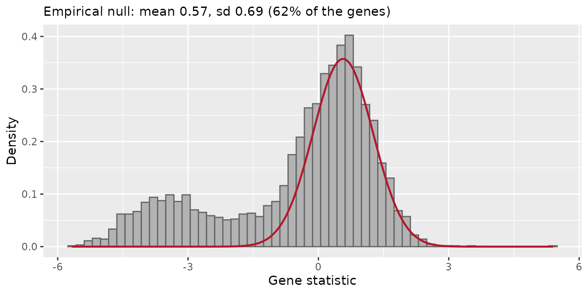
Other methods and their consensus
The other methods need no reference genes either: the default
reference of the Z-score test (random sets of sgRNAs of all the genes),
CAMERA and FRY. number_barcode = 2 keeps the genes with 3
or 4 sgRNAs.
zscore_default <- find_gene_zscore_hit(statistics, fdr = 1, seed = 1)
camera <- find_camera_hit(object, design, contrast,
number_barcode = 2, fdr = 1
)
fry <- find_roast_hit(object, design, contrast,
method = "fry", number_barcode = 2, fdr = 1
)
hit_list <- list(zscore_reference = zscore,
zscore_empirical = zscore_empirical,
zscore_one_sided = zscore_one_sided, zscore = zscore_default,
camera = camera, fry = fry)
hits <- summarise_hits(hit_list, fdr = 0.05)
head(hits)
#> # A tibble: 6 × 10
#> Gene FDR_zscore_reference FDR_zscore_empirical FDR_zscore_one_sided
#> <chr> <dbl> <dbl> <dbl>
#> 1 ATP6V1F 0.0000476 0.0000000236 4.47e-14
#> 2 BUB3 0.0000476 0.0000000130 1.47e-14
#> 3 CPSF1 0.0000476 0.0000000345 9.08e-14
#> 4 DHX15 0.0000476 0.0000000102 8.10e-15
#> 5 DPAGT1 0.0000476 0.0000000262 5.44e-14
#> 6 EIF3A 0.0000476 0.0000000101 6.35e-15
#> # ℹ 6 more variables: FDR_zscore <dbl>, FDR_camera <dbl>, FDR_fry <dbl>,
#> # NMethods <dbl>, MaxFDR <dbl>, Hit <lgl>
table(hits$NMethods)
#>
#> 0 1 2 3 4 5 6
#> 2415 22 98 121 294 69 332plot_common_hit() shows how the hits of the methods
overlap (an UpSet plot, since there are more than three methods; each
column counts the genes found by exactly the combination of methods
marked below it):
plot_common_hit(hit_list, fdr = 0.05,
title = "Depleted genes at day 18 (5% FDR)")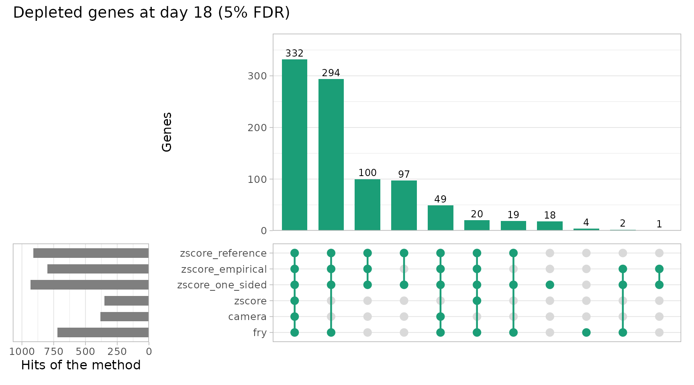
find_common_hit() returns the genes found by at least
common_in methods, for example by all six:
common <- find_common_hit(hit_list, fdr = 0.05)
length(common)
#> [1] 332
mean(common %in% essential)
#> [1] 0.8674699How many of the hits are core essential, and how many are held-out non-essential genes (false calls):
evaluate_hits <- function(result) {
called <- result$Gene[result$FDR <= 0.05]
data.frame(
`Genes called` = length(called),
`Core essential` = sum(called %in% essential),
`Held-out non-essential` = sum(called %in% held_out),
check.names = FALSE
)
}
knitr::kable(bind_rows(lapply(hit_list, evaluate_hits), .id = "Method"))| Method | Genes called | Core essential | Held-out non-essential |
|---|---|---|---|
| zscore_reference | 911 | 619 | 5 |
| zscore_empirical | 798 | 596 | 3 |
| zscore_one_sided | 932 | 619 | 7 |
| zscore | 352 | 305 | 0 |
| camera | 381 | 326 | 0 |
| fry | 720 | 552 | 1 |
The empirical null finds almost as many core essential genes as the
non-essential reference, without reference genes and with very few
held-out non-essential genes. The two tests that compare each gene with
all the others (the default Z-score test and CAMERA) are much more
conservative: they find less than half of the core essential genes, and
the default Z-score test does not give a p-value below 0.05 to any of
the held-out non-essential genes. Their reference is all the genes of
the library, and here it is full of hits: the subset keeps all the
reference genes, so 19% of its genes are core essential, against about
4% in the complete TKOv3 library. They remain conservative on the
complete library: there the default Z-score test found 58% of the core
essential genes at 5% FDR, the empirical null 90%
("central") and 94% ("one-sided"), and the
non-essential reference 96%. The default Z-score test and CAMERA rank
the genes almost in the same way (Spearman correlation of the p-values
above 0.99).
FRY (find_roast_hit()) tests each gene on its own
sgRNAs. It estimates the variability from the replicates of the model,
so a single T0 sample is enough when the other time points have
replicates, as here. It finds more essential genes than the tests
without reference, with very few held-out non-essential genes.
Depleted at every time point
find_consistent_hit() runs the same method for several
contrasts and calls a gene only if it is depleted in all of them (the
p-value of the gene is the largest of its p-values). Here the contrasts
are day 3 and day 18 against T0, with FRY:
contrast_day3 <- create_contrast(design, treatment = "T3", control = "T0")
consistent <- find_consistent_hit(object, design,
contrasts = list(Day3 = contrast_day3, Day18 = contrast),
method = "fry", method_args = list(number_barcode = 2), fdr = 1
)
head(consistent)
#> # A tibble: 6 × 9
#> Gene Direction NContrasts PValue FDR PValue_Day3 Log2FC_Day3 PValue_Day18
#> <chr> <chr> <int> <dbl> <dbl> <dbl> <dbl> <dbl>
#> 1 RPA2 Down 2 9.13e-6 0.0306 0.00000913 -2.34 0.00000203
#> 2 RTF1 Down 2 2.14e-5 0.0346 0.0000214 -0.568 0.000000779
#> 3 RPL23 Down 2 4.00e-5 0.0346 0.0000400 -1.51 0.0000337
#> 4 RPL14 Down 2 5.71e-5 0.0346 0.0000571 -1.47 0.00000141
#> 5 SMU1 Down 2 6.02e-5 0.0346 0.0000260 -3.34 0.0000602
#> 6 CKAP5 Down 2 6.19e-5 0.0346 0.0000574 -1.75 0.0000619
#> # ℹ 1 more variable: Log2FC_Day18 <dbl>Only 15 genes pass 5% FDR, because at day 3 the depletion is only
beginning and FRY, which uses the variability of the replicates, has
little power there. The genes found (13 of them are core essential) are
those whose loss stops the growth of the cells immediately, such as the
ribosomal proteins. combine_consistent_hits() does the same
with tables of p-values computed beforehand, for example with different
methods for each contrast.
A dropout screen has no treatment, so the methods that compare
treated and control samples over time, find_time_hit() and
filter_by_slope(), are not used here; they are useful in
screens with a drug and a vehicle arm at several time points (see Tutorial 3).
Looking at single genes
Before validating a hit, look at its sgRNAs: a convincing knockout has all its sgRNAs depleted, not only one. Take the ten best genes found by all the methods that are not in the reference lists:
candidates <- hits %>%
filter(NMethods == length(hit_list),
!Gene %in% c(essential, nonessential)) %>%
arrange(MaxFDR) %>%
head(10) %>%
pull(Gene)
candidates
#> [1] "ATP6V1F" "PPP6C" "DUT" "EIF1AD" "SLC30A9" "UBE2S" "NDNL2"
#> [8] "NAA25" "MRPL13" "COX7C"plot_barcode_hit() ranks all the sgRNAs by their log2
fold change (day 18 against T0, from the model) and marks the sgRNAs of
the gene (vertical lines): lines on the left side mean that the gene is
depleted. As in the hit-finding functions,
number_barcode = 2 accepts genes with 3 sgRNAs:
plot_barcode_hit(object, design, contrast,
number_barcode = 2, gene = candidates[1]
)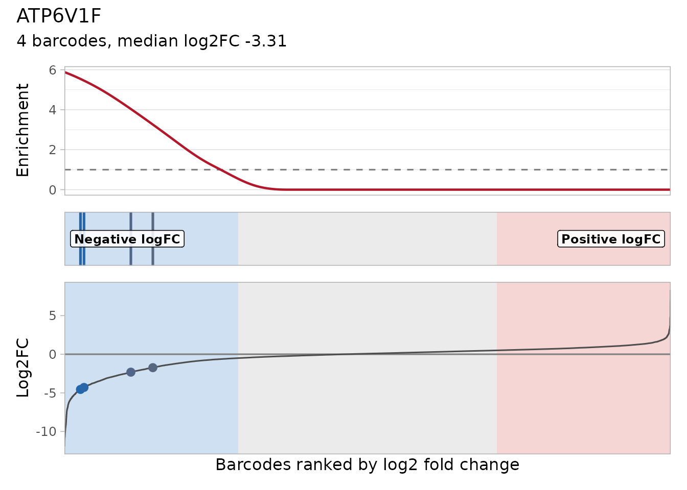
plot_barcode_trend() follows the log2 fold change of
each sgRNA at day 3 and day 18 (from the tables of
compute_metrics(), in the order of the list). With
n_col larger than 1 it combines the plots of the genes (a
patchwork object, so & applies a theme to all of them),
here the first three; each line is an sgRNA, and the long sgRNA names of
the legend are hidden:
plot_barcode_trend(list(day3, day18), genes = candidates[1:3], n_col = 3) &
theme(legend.position = "none")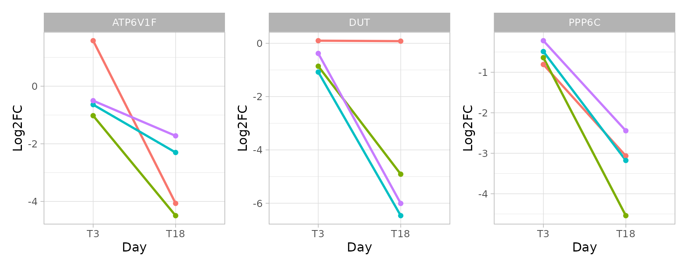
plot_barcode_heatmap() shows the sgRNAs of all ten genes
in every sample, next to a core essential gene for comparison:
plot_barcode_heatmap(object, genes = c(candidates, "POLR2L")) +
scale_x_discrete(guide = guide_axis(angle = 45))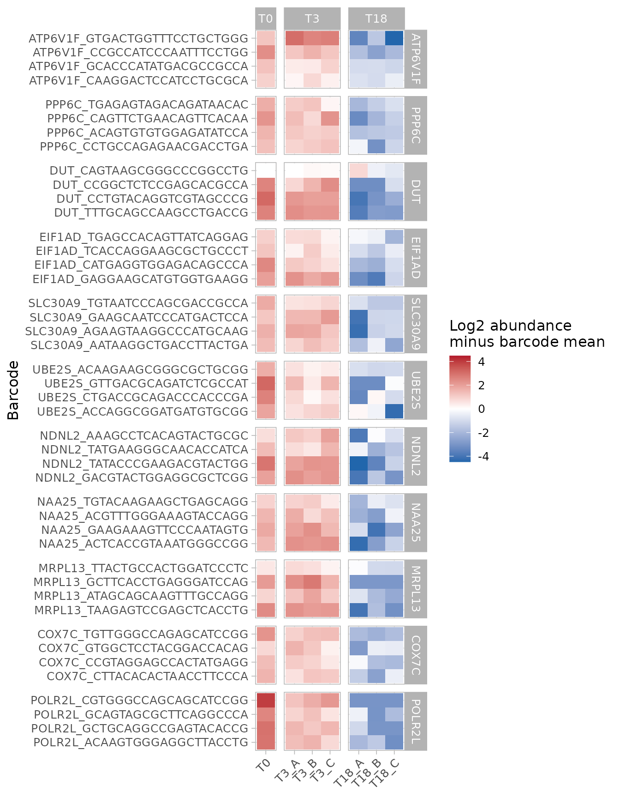
find_discordant_barcodes() lists the sgRNAs that behave
very differently from the other sgRNAs of their gene (distance from the
median of the gene in units of its MAD). With 3 or 4 sgRNAs per gene the
MAD is unstable, so many sgRNAs pass the default threshold: use it to
look at the hits, not to filter the library, and do not remove sgRNAs
before the tests.
discordant <- find_discordant_barcodes(day18, threshold = 3)
filter(discordant, Gene %in% common)
#> # A tibble: 73 × 5
#> Barcode Gene Log2FC GeneLog2FC Deviation
#> <fct> <chr> <dbl> <dbl> <dbl>
#> 1 MRPL53_GGCGGTGAGCATTTCCAGAG MRPL53 -7.10 -4.02 -27.4
#> 2 CCT8_TTTGCCCAGATGCTCAAGGA CCT8 -4.19 -1.70 -24.4
#> 3 MRPL39_GAGGAGGTACGACTCAGGCG MRPL39 0.0621 -3.39 21.4
#> 4 DKC1_ACAAGGATGAGAGTTACCTG DKC1 -4.67 -2.93 -20.1
#> 5 PPP1R8_TTGGGCAGTCGAACAGCGGG PPP1R8 -0.774 -3.28 19.0
#> 6 SYMPK_CATGACCCAGCTCTACAAGG SYMPK -5.07 -2.41 -17.8
#> 7 GEMIN5_AAACAATCTTCACCAGGCAG GEMIN5 -0.988 -3.90 16.8
#> 8 RPP21_CTGGAGCGCGGCGGTGATGG RPP21 -2.74 -4.86 13.3
#> 9 CDK9_GCACCGCAAGACCGGCCAGA CDK9 -8.22 -2.07 -12.9
#> 10 ELP2_CAAGATAGTGATCTTCCAGA ELP2 -3.01 -1.94 -11.5
#> # ℹ 63 more rowsfilter_by_variance() keeps the genes whose sgRNAs agree
(variance of the sgRNA log2 fold changes, from the model, below
variance):
filter_by_variance(object,
genes = candidates, matrix_model = design, contrast = contrast,
variance = 0.5
) %>%
distinct(Gene, Variance)
#> # A tibble: 10 × 2
#> Gene Variance
#> <chr> <dbl>
#> 1 EIF1AD 2.28
#> 2 NAA25 1.10
#> 3 NDNL2 3.57
#> 4 DUT 10.3
#> 5 UBE2S 1.14
#> 6 SLC30A9 0.0734
#> 7 COX7C 1.02
#> 8 ATP6V1F 1.99
#> 9 MRPL13 12.9
#> 10 PPP6C 1.05Comparable fold changes
scale_by_reference() scales the fold changes so that the
non-essential genes are at 0 and the essential genes at -1. Scaled
values can be compared between screens of different strength, for
example between cell lines or time points:
scaled <- scale_by_reference(day18, essential, nonessential)
scaled %>%
group_by(Gene) %>%
summarise(ScaledLog2FC = mean(ScaledLog2FC)) %>%
arrange(ScaledLog2FC) %>%
head()
#> # A tibble: 6 × 2
#> Gene ScaledLog2FC
#> <chr> <dbl>
#> 1 POLR2L -2.23
#> 2 POLR3H -2.15
#> 3 GPN3 -2.11
#> 4 ISG20L2 -1.94
#> 5 RRM1 -1.93
#> 6 MRPL53 -1.91Positive-selection screens
In a drug-resistance or positive-selection screen the interesting
genes are enriched: their knockout makes the cells
survive. Every hit-finding function takes
direction = "Up":
find_gene_zscore_hit(statistics, direction = "Up")
find_camera_hit(object, design, contrast, direction = "Up")The reference genes are not useful there (they describe fitness, not
resistance); use the default reference of
find_gene_zscore_hit() or control genes known to have no
effect on the selection.
Summary
| Step | CRISPR-specific advice | Functions |
|---|---|---|
| Create the object | time points in the Day column of a sample_table, one
Treatment for all the samples |
create_screenr_object() |
| sgRNAs per gene | lower number_barcode / min_barcodes for
3-6 sgRNAs per gene |
barcodes_per_gene() |
| Compare time points | condition_column = "Day" |
compute_metrics(),
plot_treatment_separation()
|
| Quality control | lost sgRNAs at the late time point are expected; check the separation of essential and non-essential genes |
barcode_lost(), plot_barcode_lost(),
plot_barcode_lost_for_gene(),
compute_screen_quality(),
plot_reference_separation(),
plot_zscore_distribution(), plot_trend(),
compute_slope(), plot_treatment_separation(),
plot_barcode_heatmap()
|
| sgRNA efficiency | the sgRNAs of the essential genes estimate it; check that it is reproducible and relate it to the sequence |
compute_metrics(),
get_normalized_count_table()
|
| Copy-number bias | correct with CRISPRcleanR on the complete library | correct_crispr_bias() |
| Hits | use the non-essential genes as reference when available, otherwise the empirical null |
find_gene_zscore_hit(control_genes = ),
find_gene_zscore_hit(reference = "empirical"),
plot_empirical_null(), find_camera_hit(),
find_roast_hit(), summarise_hits(),
plot_common_hit(), find_common_hit(),
find_consistent_hit()
|
| Single genes | check that all the sgRNAs of a hit agree |
plot_barcode_hit(), plot_barcode_trend(),
plot_barcode_heatmap(),
find_discordant_barcodes(),
filter_by_variance()
|
| Compare screens | scale to the reference genes | scale_by_reference() |
| Positive selection | look for enriched genes | direction = "Up" |
Literature
- Doench JG, Hartenian E, Graham DB et al. (2014). Rational design of highly active sgRNAs for CRISPR-Cas9-mediated gene inactivation. Nat Biotechnol 32:1262-1267.
- Doench JG, Fusi N, Sullender M et al. (2016). Optimized sgRNA design to maximize activity and minimize off-target effects of CRISPR-Cas9. Nat Biotechnol 34:184-191.
- Hart T, Tong AHY, Chan K et al. (2017). Evaluation and design of genome-wide CRISPR/SpCas9 knockout screens. G3 7:2719-2727.
- Hart T, Brown KR, Sircoulomb F, Rottapel R, Moffat J (2014). Measuring error rates in genomic perturbation screens: gold standards for human functional genomics. Mol Syst Biol 10:733.
- Iorio F, Behan FM, Goncalves E et al. (2018). Unsupervised correction of gene-independent cell responses to CRISPR-Cas9 targeting. BMC Genomics 19:604.
Session info
sessionInfo()
#> R version 4.6.1 (2026-06-24)
#> Platform: x86_64-pc-linux-gnu
#> Running under: Ubuntu 24.04.5 LTS
#>
#> Matrix products: default
#> BLAS: /usr/lib/x86_64-linux-gnu/openblas-pthread/libblas.so.3
#> LAPACK: /usr/lib/x86_64-linux-gnu/openblas-pthread/libopenblasp-r0.3.26.so; LAPACK version 3.12.0
#>
#> locale:
#> [1] LC_CTYPE=C.UTF-8 LC_NUMERIC=C LC_TIME=C.UTF-8
#> [4] LC_COLLATE=C.UTF-8 LC_MONETARY=C.UTF-8 LC_MESSAGES=C.UTF-8
#> [7] LC_PAPER=C.UTF-8 LC_NAME=C LC_ADDRESS=C
#> [10] LC_TELEPHONE=C LC_MEASUREMENT=C.UTF-8 LC_IDENTIFICATION=C
#>
#> time zone: UTC
#> tzcode source: system (glibc)
#>
#> attached base packages:
#> [1] stats graphics grDevices utils datasets methods base
#>
#> other attached packages:
#> [1] ggplot2_4.0.3 dplyr_1.2.1 ScreenR_1.15.16 BiocStyle_2.40.0
#>
#> loaded via a namespace (and not attached):
#> [1] SummarizedExperiment_1.42.0 gtable_0.3.6
#> [3] xfun_0.62 bslib_0.12.0
#> [5] Biobase_2.72.0 lattice_0.22-9
#> [7] vctrs_0.7.3 tools_4.6.1
#> [9] generics_0.1.4 stats4_4.6.1
#> [11] tibble_3.3.1 pkgconfig_2.0.3
#> [13] Matrix_1.7-5 RColorBrewer_1.1-3
#> [15] S7_0.2.2 desc_1.4.3
#> [17] S4Vectors_0.50.3 lifecycle_1.0.5
#> [19] compiler_4.6.1 farver_2.1.2
#> [21] stringr_1.6.0 textshaping_1.0.5
#> [23] statmod_1.5.2 Seqinfo_1.2.0
#> [25] htmltools_0.5.9 sass_0.4.10
#> [27] yaml_2.3.12 pillar_1.11.1
#> [29] pkgdown_2.2.1 jquerylib_0.1.4
#> [31] tidyr_1.3.2 DelayedArray_0.38.2
#> [33] cachem_1.1.0 limma_3.68.5
#> [35] abind_1.4-8 tidyselect_1.2.1
#> [37] locfit_1.5-9.12 digest_0.6.39
#> [39] stringi_1.8.9 purrr_1.2.2
#> [41] bookdown_0.48 labeling_0.4.3
#> [43] fastmap_1.2.0 grid_4.6.1
#> [45] cli_3.6.6 SparseArray_1.12.3
#> [47] magrittr_2.0.5 patchwork_1.3.2
#> [49] S4Arrays_1.12.1 utf8_1.2.6
#> [51] withr_3.0.3 edgeR_4.10.6
#> [53] scales_1.4.0 rmarkdown_2.32
#> [55] XVector_0.52.0 matrixStats_1.5.0
#> [57] otel_0.2.0 ragg_1.5.2
#> [59] evaluate_1.0.5 knitr_1.52
#> [61] GenomicRanges_1.64.0 IRanges_2.46.0
#> [63] rlang_1.3.0 glue_1.8.1
#> [65] BiocManager_1.30.27 BiocGenerics_0.58.1
#> [67] jsonlite_2.0.0 R6_2.6.1
#> [69] MatrixGenerics_1.24.0 systemfonts_1.3.2
#> [71] fs_2.1.0